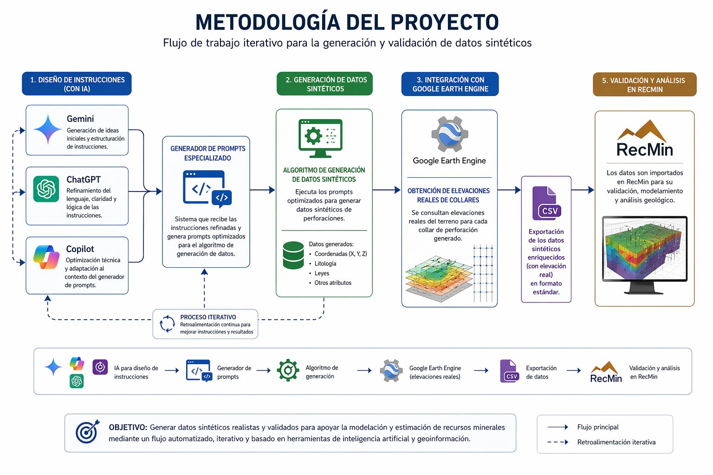

Módulo de Geoestadística Generativa
Potenciando la Ingeniería de Minas con Inteligencia Artificial.
Quiénes Somos / Introducción
Somos estudiantes de Ingeniería en Minas enfocados en la caracterización del subsuelo y la estimación de recursos minerales mediante el uso de datos sintéticos, integrando geoestadística, análisis de datos e inteligencia artificial, a través de esta plataforma compartimos metodologías, procesos y herramientas aplicadas con fines académicos, contribuyendo al aprendizaje colaborativo y al desarrollo de soluciones en geología aplicada.
Misión
Diseñar e implementar un entorno integrado de modelización minera que combine datos sintéticos, geoestadística e inteligencia artificial para representar de manera confiable los sistemas geológicos, orientado a la automatización de los procesos de análisis, estimación de recursos y soporte a la toma de decisiones, especialmente en contextos donde la información disponible es limitada o presenta alta incertidumbre.
Visión
Consolidar una plataforma automatizada capaz de generar, procesar e interpretar datos geológicos sintéticos para la construcción de modelos predictivos robustos, que optimicen los flujos de trabajo en la estimación de recursos minerales y sirvan como base para el desarrollo de metodologías innovadoras aplicables en escenarios reales con restricciones de información.
Etapa 1
Generación de Datos Sintéticos
Metodología Aplicada
Implementamos un flujo de trabajo iterativo utilizando **Gemini, ChatGPT y Copilot** para el diseño y refinamiento de instrucciones orientadas a un generador de prompts especializado. Mediante este sistema, desarrollamos un algoritmo de generación de datos sintéticos integrado con el motor de **Google Earth Engine** para obtener elevaciones reales de collares. Finalmente, los resultados fueron exportados y validados en el software **RecMin** para su posterior análisis geológico.
Diagrama de Flujo del Proceso

Imagen no encontrada: diagrama_generacion_datos.png
Verifica que el nombre coincida exactamente en GitHub